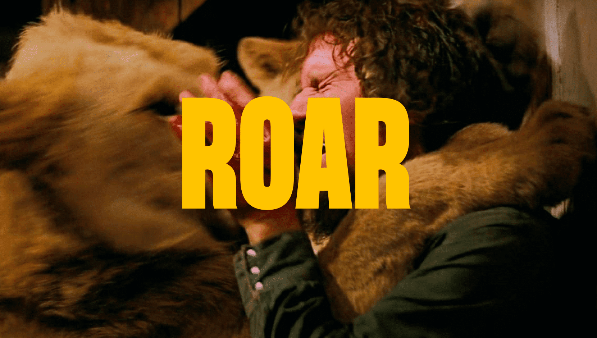
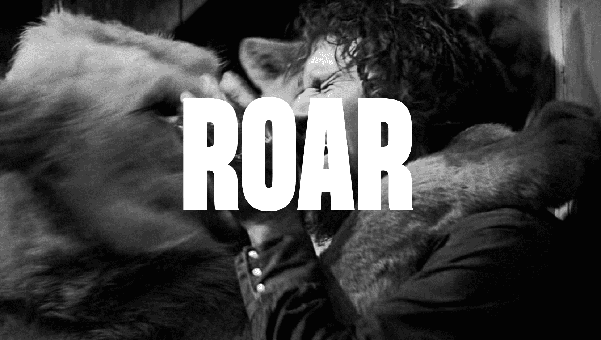

SYNOPSIS
ROAR (1981) film réalisé par Noel Marshall (durée: 1h42)
Dans le cadre de son étude portant sur les félins sauvages, Hank, scientifique américain, est parti s’installer en Afrique pour vivre parmi ces animaux à la réputation extrêmement dangereuse. Sa maison est un refuge pour plus d’une centaine de fauves que le chercheur élève en toute liberté. Restés aux États-Unis, sa femme Madelaine et ses enfants Melanie, John et Jerry décident de venir lui rendre visite. Mais à leur arrivée, Hank n’est pas là pour les accueillir. À la place, ils découvrent avec effroi les autres habitants qui, en l’absence du maître de maison, ont totalement pris le contrôle du lieu…